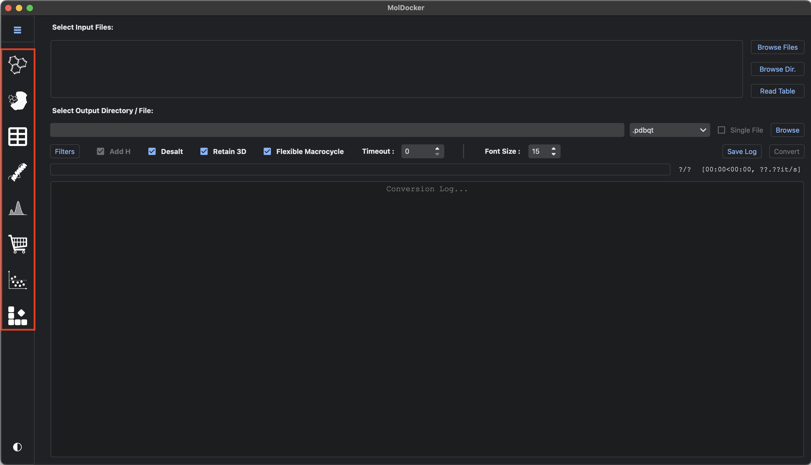

Interface & Basic Functions¶
MolDocker offers a suite of tools accessible through the sidebar to streamline each step of virtual high-throughput screening. From top to bottom, the sidebar includes:
- Converter
- Docker
- Table
- Structure
- Figure
- Shopper
- Threshold (beta)
- Decomposition (beta)

Converter¶
The Converter is used for molecule preparation, ensuring they are formatted correctly and ready to be processed by downstream docking programs.
Molecule Preparation¶
- Import/Download/Draw Molecules: Supports various methods for inputting molecules.
- Compare Molecules: Compare input molecules with other local databases to extract similar or dissimilar molecules.
- Sample Molecules: Perform random or diversity-based sampling to effectively reduce the size of the dataset.
- Filter Molecules: Apply filters using chemical properties (e.g., Lipinski's Ro5) and substructures (e.g., PAINS) to remove or retain specific molecules.
- Convert Molecules: Convert the final set of molecules into formats suitable for various docking programs.
Docker¶
The Docker includes two major functions: protein & docking settings preparation and molecular docking.
Protein & Docking Settings Preparation¶
- Import/Download and Process Protein Structure: Process local or downloaded protein structures into a docking-ready format.
- Set Docking Parameters: Input docking settings through an interactive 3D structure interface.
Molecular Docking¶
- Docking: Perform molecular docking with various programs, including:
- Local:
- AutoDock VINA
- QuickVINA 2
- QuickVINA-W
- smina
- LeDock
- MD Forcefield-based Refinement
-
Web:
- Uni-Dock
- gnina
- DiffDock
- MD Forcefield-based Refinement
Web-based docking can be performed on Google Colab and Hugging Face Space.
- Local:
Table¶
The Table module can read a directory full of docked files and process the docked data (docked scores and molecular properties) into a table.
Result Table¶
- Display Docked Scores / Molecular Properties: Show the scores from each docking program and calculate various molecular properties.
- Filter Table: Filter the displayed rows and columns to selectively show desired results.
- Save Result: Save the filtered table (CSV / TSV / XLSX) or their corresponding structures (individual SDF).
Structure¶
The Structure module can display protein-ligand complexes from the filtered table in a 3D viewer.
Display Complex¶
- Visualize Complex: Show the 3D complex of the docked ligand and the protein.
- Profile Interactions: Analyze the interactions between the protein and ligand, including:
- Hydrogen bonds
- Hydrophobic contacts
- Halogen bonds
- Ionic interactions
- Cation-π interactions
- π-π / T-stacking interactions
- Save Structure: Save the displayed structures into individual protein (PDB), ligand (PDB / SDF), complex (PDB), and contact (CSV) files.
Figure¶
The Figure module can create interactive plots for docked data.
Plot Data¶
- Display Correlation Plot: Display an interactive heatmap of the Pearson correlation between all docked data.
- Display Distribution Plot: Display an interactive distribution (histogram, KDE, and rug) of a single docked dataset.
- Display Marginal Plot: Display an interactive marginal plot of two docked datasets (with optional coloring by a third dataset).
Shopper¶
The Shopper module can search for potential chemical vendors that distribute table-filtered or user-provided molecules.
Search Vendors¶
- Import Molecules: Import non-docked molecules in various formats into Shopper.
- Search ZINC22: Query ZINC22 to find potential vendors.
- Search PubChem: Query PubChem to find potential vendors.
- Search Local Database: Query local databases to find similar molecules.
- Save Result: Save found catalogs, SMILES, and chemical 2D images.
- Search Up-To-Date Websites: Query up-to-date websites directly using MolDocker's own browser.
Threshold (beta)¶
The Threshold module can help determine empirical thresholds based on current docked data. This function is currently experimental and subject to change in the future.
Determine Empirical Threshold¶
- Display Thresholded Scatter Plot: Display a thresholded scatter plot for each docked dataset to help visualize the thresholds.
- Calculate Threshold: Find the "best" threshold automatically.
- Export Filter: Save the final filter as an individual settings file (YAML) that can be imported via the Filter dialog in the Converter.
Decomposition (beta)¶
The Decomposition module can help decompose molecules into theoretically synthesizable building blocks using the MacFrag algorithm. This function is currently experimental and subject to change in the future.
Decompose Molecules¶
- Display Decomposed Building Blocks: Display images and SMARTS of the building blocks.
- Calculate Contribution Score: Score each building block based on their contribution to the docking score.